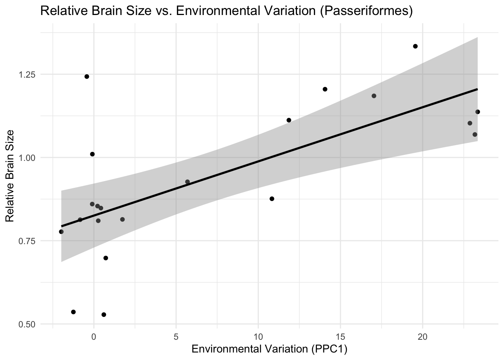

library(nlme)
library(EnvStats)
library(phylopath)
library(ape)
library(phytools)
library(car)
library(dplyr)
library(tidyverse)
library(ggplot2)Data-Analysis-Replication
Introduction
The paper mainly examines relationship between environmental variability and brain size in birds. The authors hypothesize that species living in more unpredictable environments may have evolved larger brains relative to their body size as an adaptive response.They also explores these patterns within major avian orders to assess whether evolutionary responses differ among lineages.
They apply phylogenetic generalized least squares (PGLS) models to examine associations between brain size and measures of environmental variability. Additionally, they categorize species into behavioral groups (e.g., residents and migrants) to investigate differences in seasonal resource availability.
In this project, I aim to replicate:
1. Table 1 (PGLS Models Testing Environmental Variation and Brain Size): The paper presents PGLS models examining how environmental variability (PPC1, PPC2, snow cover, and EVI variability) is associated with brain size across birds. I replicate these models and compare the estimated coefficients, standard errors, and p-values with those reported in the original study.
2. Figure 2 (Relationship Between Relative Brain Size and Environmental Variation in Different Avian Orders): The figure illustrates the relationship between relative brain size (computed as residuals from a log-log PGLS of brain and body size) and environmental variation (PPC1) within four avian orders: Passeriformes, Strigiformes, Piciformes, and Galliformes. I replicate this by fitting separate PGLS models for each order and visualizing the associations with scatterplots and regression lines.
3. Figure 3 (Seasonal EVI Differences Across Behavioral Categories): This figure shows how EVI varies seasonally (summer breeding vs. winter non-breeding vs. winter breeding) among different behavioral groups of birds (residents at low-, mid-, and high-latitudes, and short- and long-distance migrants). I replicate this by running a PGLS on breeding-site EVI against behavior categories and and structuring the bar plot with mean and standard error of EVI for each category.
Visulization of Data
load packages:
load data:
# Load data
df <- read.csv("https://raw.githubusercontent.com/AnjieSu/Data-Analysis-Replication/refs/heads/main/data/41467_2016_BFncomms13971_MOESM2316_ESM.csv")
head(df) species order LogBrain LogBody BrainResidual
1 Abroscopus_albogularis PASSERIFORMES -1.079 1.609 0.143
2 Acanthagenys_rufogularis PASSERIFORMES 0.144 3.915 0.164
3 Acanthiza_chrysorrhoa PASSERIFORMES -0.777 2.303 0.090
4 Acanthiza_ewingii PASSERIFORMES -0.462 1.386 0.874
5 Acanthiza_inornata PASSERIFORMES -0.821 2.140 0.128
6 Acanthiza_lineata PASSERIFORMES -0.664 1.906 0.405
BehaviorCategories MigratoryDistance SnowWeeks EVI.BreedingSite.Winter.
1 Resident.MidLat 0 0.042 1.531
2 Resident.MidLat 0 0.000 1.350
3 Resident.MidLat 0 0.008 1.376
4 Resident.HighLat 0 0.418 1.547
5 Resident.MidLat 0 0.001 1.531
6 Resident.MidLat 0 0.008 1.508
EVI.BreedingSite.Summer. EVI.NonBreedingSite.Winter. CV.EVI.Intra.year
1 1.634 1.531 0.030
2 1.356 1.350 0.007
3 1.372 1.376 0.008
4 1.522 1.547 0.012
5 1.412 1.531 0.024
6 1.465 1.508 0.016
CV.EVI.Among.years PPC1 PPC2 FruitConsumer InsectConsumer ForestDweller
1 0.011 1.767 -0.504 0 1 1
2 0.009 -3.067 -0.509 1 1 1
3 0.010 -2.463 -0.088 0 1 1
4 0.015 1.539 2.119 0 1 1
5 0.012 0.904 0.200 0 1 1
6 0.015 1.129 2.944 0 1 1
DietBreadth Incubation Fledging DevelopmentalMode SocialMatingSystem
1 0.000 NA NA altricial Monogamous
2 0.170 14.5 16.5 altricial Facultative
3 0.152 16.4 18.5 altricial Polygamous
4 0.173 NA NA altricial Monogamous
5 0.131 NA NA altricial <NA>
6 0.096 16.3 18.5 altricial Monogamous
ColonialBreeding SocialForaging
1 Solitary Aggregation
2 Solitary Aggregation
3 Solitary Aggregation
4 Solitary Aggregation
5 <NA> <NA>
6 Solitary AggregationStatistical Replications/Reanalysis
Replicate of models in Table 1
In the original study, the authors used phylogenetic generalized least squares (PGLS) models to test whether brain size is associated with environmental variation, while controlling for body size. Instead of using the caper package as in the original study, I use the nlme package, which is standard in my own research. All models incorporate Pagel’s λ correlation structure, following the same statistical approach as the original paper.
The phylogenetic tree used here is the one my lab works with. The tree is pruned to include only species present in the dataset.
# load Tree
load("~/repos/Data-Analysis-Replication/data/Bird.MCC.tree.Rdata")
# prune to keep only desired species
mytree <- ape::drop.tip(mytree, mytree$tip.label[-which(mytree$tip.label %in% df$species)])
# use species names as row labels so that phylopath can match datasets
df <- data.frame(df, row.names = df$species)
# remove any na value
mydata <- df %>%
drop_na(LogBrain, LogBody, CV.EVI.Intra.year, CV.EVI.Among.years, SnowWeeks, PPC1, PPC2) # N = 835# Model 1: Brain size vs. Body size + CV(EVI) within-year
model1 <- gls(LogBrain ~ LogBody + CV.EVI.Intra.year, data = mydata,
correlation = corPagel(value = 1, phy = mytree,
form = ~ species), method = "REML")
# Model 2: Brain size vs. Body size + log(Weeks of Snow + 1)
model2 <- gls(LogBrain ~ LogBody + log(SnowWeeks + 1), data = mydata,
correlation = corPagel(value = 1, phy = mytree,
form = ~ species), method = "REML")
# Model 3: Brain size vs. Body size + CV(EVI) among-years
model3 <- gls(LogBrain ~ LogBody + CV.EVI.Among.years, data = mydata,
correlation = corPagel(value = 1, phy = mytree,
form = ~ species), method = "REML")
# Model 4: Brain size vs. Body size + Environmental PCA components
model4 <- gls(LogBrain ~ LogBody + PPC1 + PPC2, data = mydata,
correlation = corPagel(value = 1, phy = mytree,
form = ~ species), method = "REML")The following section presents the summary outputs of the four PGLS models replicated from Table 1 in the original study. The published Table 1 is also displayed below.
summary(model1)Generalized least squares fit by REML
Model: LogBrain ~ LogBody + CV.EVI.Intra.year
Data: mydata
AIC BIC logLik
-526.4372 -502.818 268.2186
Correlation Structure: corPagel
Formula: ~species
Parameter estimate(s):
lambda
0.9133322
Coefficients:
Value Std.Error t-value p-value
(Intercept) -2.6727325 0.1632087 -16.37616 0
LogBody 0.5997661 0.0080607 74.40577 0
CV.EVI.Intra.year 2.5285473 0.5886987 4.29515 0
Correlation:
(Intr) LogBdy
LogBody -0.287
CV.EVI.Intra.year -0.046 -0.049
Standardized residuals:
Min Q1 Med Q3 Max
-2.616971 1.011175 1.730276 2.343793 4.772499
Residual standard error: 0.3374418
Degrees of freedom: 835 total; 832 residualsummary(model2)Generalized least squares fit by REML
Model: LogBrain ~ LogBody + log(SnowWeeks + 1)
Data: mydata
AIC BIC logLik
-513.6953 -490.0761 261.8476
Correlation Structure: corPagel
Formula: ~species
Parameter estimate(s):
lambda
0.9143997
Coefficients:
Value Std.Error t-value p-value
(Intercept) -2.6351736 0.16393985 -16.07403 0e+00
LogBody 0.5993438 0.00809789 74.01238 0e+00
log(SnowWeeks + 1) 0.0438021 0.01196624 3.66047 3e-04
Correlation:
(Intr) LogBdy
LogBody -0.289
log(SnowWeeks + 1) 0.008 -0.066
Standardized residuals:
Min Q1 Med Q3 Max
-2.6083934 0.9951438 1.7118741 2.3233830 4.7331789
Residual standard error: 0.3391974
Degrees of freedom: 835 total; 832 residualsummary(model3)Generalized least squares fit by REML
Model: LogBrain ~ LogBody + CV.EVI.Among.years
Data: mydata
AIC BIC logLik
-541.986 -518.3669 275.993
Correlation Structure: corPagel
Formula: ~species
Parameter estimate(s):
lambda
0.9152485
Coefficients:
Value Std.Error t-value p-value
(Intercept) -2.747664 0.1636158 -16.79339 0
LogBody 0.598144 0.0080150 74.62782 0
CV.EVI.Among.years 11.232254 1.9876853 5.65092 0
Correlation:
(Intr) LogBdy
LogBody -0.278
CV.EVI.Among.years -0.117 -0.067
Standardized residuals:
Min Q1 Med Q3 Max
-2.7065166 0.9771407 1.6906977 2.3295941 4.6622281
Residual standard error: 0.336135
Degrees of freedom: 835 total; 832 residualsummary(model4)Generalized least squares fit by REML
Model: LogBrain ~ LogBody + PPC1 + PPC2
Data: mydata
AIC BIC logLik
-517.5425 -489.2067 264.7712
Correlation Structure: corPagel
Formula: ~species
Parameter estimate(s):
lambda
0.9140421
Coefficients:
Value Std.Error t-value p-value
(Intercept) -2.6212550 0.16200650 -16.17994 0.000
LogBody 0.5982404 0.00800807 74.70469 0.000
PPC1 0.0090874 0.00158813 5.72207 0.000
PPC2 0.0090035 0.00319918 2.81431 0.005
Correlation:
(Intr) LogBdy PPC1
LogBody -0.290
PPC1 0.021 -0.069
PPC2 0.006 -0.015 0.344
Standardized residuals:
Min Q1 Med Q3 Max
-2.6997385 0.9993996 1.6951645 2.3413196 4.7137463
Residual standard error: 0.335169
Degrees of freedom: 835 total; 831 residualknitr::include_graphics("images/Table 1.png")
Overall, the results support the study’s hypothesis that species in more variable environments tend to have larger brains.
Replicate of Figure 2
For this replication, I again use GLS with Pagel’s λ correlation structure and the MCC phylogenetic tree, consistent with my approach in the first replication.
The original paper does not specify whether or how the predictor variables were transformed, despite the fact that their distributions are skewed and likely required transformation. Since transformation is necessary for proper model fitting, I applied a Box-Cox transformation to normalize the data.
Additionally, while my results capture the overall trend observed in the paper, I was unable to exactly match their reported regression coefficients (betas). Based on the sample sizes (N) reported in the figure caption, I inferred that their model did not include any additional covariates, so I followed this approach and fit a simpler model without covariates.
# BC transform
myBCtransform <- function(myvector) {
require(EnvStats)
myindex <- which(!is.na(myvector))
# shift scale to positive numbers and identify optimal lambda for box-cox transformation
mylambda <- boxcox(as.numeric(myvector[myindex])-min(as.numeric(myvector[myindex]))+1, optimize = T)$lambda
# transform
myvector[myindex] <- scale(boxcoxTransform(as.numeric(myvector[myindex])-min(as.numeric(myvector[myindex]))+1, mylambda))
return (myvector)
}Passeriformes
# subset for Passeriformes
dataPas <- mydata %>%
filter(order == "PASSERIFORMES") # N=417
# prune tree
pruned.tree <- drop.tip(mytree, mytree$tip.label[-which(mytree$tip.label %in% row.names(dataPas))])
# PGLS for Passeriformes
modPas <- gls(BrainResidual ~ myBCtransform(PPC1), data = dataPas,
correlation = corPagel(value = 1, phy = pruned.tree,
form = ~ species), method = "REML")
# Model summary
summary(modPas)Generalized least squares fit by REML
Model: BrainResidual ~ myBCtransform(PPC1)
Data: dataPas
AIC BIC logLik
-265.8483 -249.7352 136.9242
Correlation Structure: corPagel
Formula: ~species
Parameter estimate(s):
lambda
0.9132411
Coefficients:
Value Std.Error t-value p-value
(Intercept) 0.3812199 0.09270001 4.112404 0
myBCtransform(PPC1) 0.0412823 0.00855556 4.825199 0
Correlation:
(Intr)
myBCtransform(PPC1) 0.008
Standardized residuals:
Min Q1 Med Q3 Max
-2.8986977 -0.7713327 -0.2524941 0.2268106 3.1072665
Residual standard error: 0.2738832
Degrees of freedom: 417 total; 415 residualStrigiformes
# subset for Strigiformes
dataStr <- mydata %>%
filter(order == "STRIGIFORMES")
# prune tree
pruned.tree <- drop.tip(mytree, mytree$tip.label[-which(mytree$tip.label %in% row.names(dataStr))])
# PGLS for Strigiformes
modStr <- gls(BrainResidual ~ myBCtransform(PPC1), data = dataStr,
correlation = corPagel(value = 1, phy = pruned.tree,
form = ~ species), method = "REML")
# Model summary
summary(modStr)Generalized least squares fit by REML
Model: BrainResidual ~ myBCtransform(PPC1)
Data: dataStr
AIC BIC logLik
-0.9172787 2.860477 4.458639
Correlation Structure: corPagel
Formula: ~species
Parameter estimate(s):
lambda
-0.4083079
Coefficients:
Value Std.Error t-value p-value
(Intercept) 0.9325357 0.01235101 75.50280 0
myBCtransform(PPC1) 0.1592871 0.02446327 6.51128 0
Correlation:
(Intr)
myBCtransform(PPC1) -0.986
Standardized residuals:
Min Q1 Med Q3 Max
-2.329522983 -0.516840266 0.002622132 0.544417307 3.071174217
Residual standard error: 0.1438782
Degrees of freedom: 21 total; 19 residualPiciformes
# subset for Piciformes
dataPic <- mydata %>%
filter(order == "PICIFORMES")
# prune tree
pruned.tree <- drop.tip(mytree, mytree$tip.label[-which(mytree$tip.label %in% row.names(dataPic))])
# PGLS for Piciformes
modPic <- gls(BrainResidual ~ myBCtransform(PPC1), data = dataPic,
correlation = corPagel(value = 1, phy = pruned.tree,
form = ~ species), method = "REML")
# Model summary
summary(modPic)Generalized least squares fit by REML
Model: BrainResidual ~ myBCtransform(PPC1)
Data: dataPic
AIC BIC logLik
9.552089 15.02127 -0.7760445
Correlation Structure: corPagel
Formula: ~species
Parameter estimate(s):
lambda
1.008804
Coefficients:
Value Std.Error t-value p-value
(Intercept) 0.27928159 0.20252490 1.378999 0.1784
myBCtransform(PPC1) 0.07777969 0.03548675 2.191795 0.0366
Correlation:
(Intr)
myBCtransform(PPC1) 0.054
Standardized residuals:
Min Q1 Med Q3 Max
-1.30310035 0.08741642 0.61856805 1.11657771 2.11951830
Residual standard error: 0.3897314
Degrees of freedom: 31 total; 29 residualGalliformes
# subset for Galliformes
dataGal <- mydata %>%
filter(order == "GALLIFORMES")
# prune tree
pruned.tree <- drop.tip(mytree, mytree$tip.label[-which(mytree$tip.label %in% row.names(dataGal))])
# PGLS for Galliformes
modGal <- gls(BrainResidual ~ myBCtransform(PPC1), data = dataGal,
correlation = corPagel(value = 1, phy = pruned.tree,
form = ~ species), method = "REML")
# Model summary
summary(modGal)Generalized least squares fit by REML
Model: BrainResidual ~ myBCtransform(PPC1)
Data: dataGal
AIC BIC logLik
-9.939398 -5.956469 8.969699
Correlation Structure: corPagel
Formula: ~species
Parameter estimate(s):
lambda
0.7006916
Coefficients:
Value Std.Error t-value p-value
(Intercept) -0.19105643 0.08486789 -2.2512216 0.0358
myBCtransform(PPC1) -0.00728922 0.03690230 -0.1975275 0.8454
Correlation:
(Intr)
myBCtransform(PPC1) 0.251
Standardized residuals:
Min Q1 Med Q3 Max
-1.5693117 -0.7769129 -0.2645855 0.1967845 2.1121655
Residual standard error: 0.170966
Degrees of freedom: 22 total; 20 residualThe estimates and standard deviations differ from those reported in the original paper, yet the overall findings remain consistent. Specifically, the results confirm a significant positive effect of environmental variation (PPC1) on relative brain size in Passeriformes, Strigiformes, and Piciformes, while no significant relationship is found in Galliformes, aligning with the conclusions of the original study.
Below are my replicated plots alongside the original figures from the paper for comparison.
# Plot relBS ~ PPC1 for Passeriforms
ggplot(data = dataPas, aes(x = PPC1, y = BrainResidual)) +
geom_point(alpha = 1) +
geom_smooth(method = "lm", se = TRUE, color = "black") +
labs(title = "Relative Brain Size vs. Environmental Variation (Passeriformes)",
x = "Environmental Variation (PPC1)",
y = "Relative Brain Size") +
theme_minimal() +
theme(legend.position = "none")# Plot relBS ~ PPC1 for Strigiformes
ggplot(data = dataStr, aes(x = PPC1, y = BrainResidual)) +
geom_point(alpha = 1) +
geom_smooth(method = "lm", se = TRUE, color = "black") +
labs(title = "Relative Brain Size vs. Environmental Variation (Passeriformes)",
x = "Environmental Variation (PPC1)",
y = "Relative Brain Size") +
theme_minimal() +
theme(legend.position = "none")
# Plot relBS ~ PPC1 for Piciformes
ggplot(data = dataPic, aes(x = PPC1, y = BrainResidual)) +
geom_point(alpha = 1) +
geom_smooth(method = "lm", se = TRUE, color = "black") +
labs(title = "Relative Brain Size vs. Environmental Variation (Passeriformes)",
x = "Environmental Variation (PPC1)",
y = "Relative Brain Size") +
theme_minimal() +
theme(legend.position = "none")# Plot relBS ~ PPC1 for Galliformes
ggplot(data = dataGal, aes(x = PPC1, y = BrainResidual)) +
geom_point(alpha = 1) +
geom_smooth(method = "lm", se = TRUE, color = "black") +
labs(title = "Relative Brain Size vs. Environmental Variation (Passeriformes)",
x = "Environmental Variation (PPC1)",
y = "Relative Brain Size") +
theme_minimal() +
theme(legend.position = "none")# figure 2 from the paper
knitr::include_graphics("images/Figure 2.png")
Replicate of Figure 3
The original study first examines EVI in breeding sites across all behavioral categories using PGLS models, specifically testing how EVI in breeding sites during winter (EVI.BreedingSite.Winter.) varies among species.Following this, they present a bar plot comparing EVI values between summer and winter across different behavioral categories.
# set mid-lat residents as reference
df$BehaviorCategories <- factor(df$BehaviorCategories)
df$BehaviorCategories <- relevel(df$BehaviorCategories, ref = "Resident.MidLat")
# filter date
data_allEVI <- df %>%
drop_na(EVI.BreedingSite.Winter.)
# prune tree
pruned.tree <- drop.tip(mytree, mytree$tip.label[-which(mytree$tip.label %in% row.names(data_allEVI))])
# run the PGLS
modBehCat <- gls(EVI.BreedingSite.Winter. ~ BehaviorCategories, data = data_allEVI,
correlation = corPagel(value = 1, phy = pruned.tree,
form = ~ species), method = "REML")
summary(modBehCat)Generalized least squares fit by REML
Model: EVI.BreedingSite.Winter. ~ BehaviorCategories
Data: data_allEVI
AIC BIC logLik
-1746.611 -1711.297 880.3055
Correlation Structure: corPagel
Formula: ~species
Parameter estimate(s):
lambda
0.6735772
Coefficients:
Value Std.Error t-value p-value
(Intercept) 1.4431484 0.06560185 21.998593 0
BehaviorCategoriesMigrant.Long -0.2584942 0.01730410 -14.938321 0
BehaviorCategoriesMigrant.Short -0.2085061 0.01035858 -20.128829 0
BehaviorCategoriesResident.HighLat -0.1667609 0.01726045 -9.661448 0
BehaviorCategoriesResident.LowLat 0.1094331 0.00843938 12.966965 0
Correlation:
(Intr) BhCM.L BhCM.S BCR.HL
BehaviorCategoriesMigrant.Long -0.035
BehaviorCategoriesMigrant.Short -0.054 0.338
BehaviorCategoriesResident.HighLat -0.030 0.112 0.226
BehaviorCategoriesResident.LowLat -0.076 0.262 0.438 0.233
Standardized residuals:
Min Q1 Med Q3 Max
-1.8508848 -0.5026131 0.1725508 0.6743039 2.4917679
Residual standard error: 0.1594634
Degrees of freedom: 1152 total; 1147 residualThe model finds that EVI in breeding areas during winter decreases more significantly for high-latitude residents, short-distance migrants, and long-distance migrants compared to mid- and low-latitude residents. They report this effect as statistically significant (PGLS, P < 0.001) and reference Supplementary Table 10 as the source of this result.
However, upon reviewing Supplementary Table 10, it does not appear to directly correspond to the analysis described in the main text.Despite this discrepancy, for reference, I include below the captions for Figure 3 and Supplementary Table 10 as they appear in the original paper.
knitr::include_graphics("images/Figure 3 Caption.png")
knitr::include_graphics("images/Suppementary Table 10.png")
In the original paper, Figure 3 presents Enhanced Vegetation Index (EVI) values for different behavior categories across seasons. However, the specific transformation applied to EVI values is not explicitly described in the methods. While my dataset contains only positive EVI values, the original figure includes negative values, suggesting that a rescaling or normalization process was used. After testing multiple potential transformations (e.g., z-score normalization, mean-centering relative to residents, log transformation, and min-max scaling), none produced a pattern consistent with the published figure. Given this, I present the raw EVI values in my replication figure while acknowledging this discrepancy.
# Plot
# convert BehaviorCategories to correct order
df$BehaviorCategories <- factor(df$BehaviorCategories,
levels = c("Resident.LowLat", "Resident.MidLat", "Resident.HighLat",
"Migrant.Short", "Migrant.Long"))
# reshape data
df_re <- df %>%
select(BehaviorCategories, EVI.BreedingSite.Summer.,
EVI.NonBreedingSite.Winter., EVI.BreedingSite.Winter.) %>%
pivot_longer(cols = starts_with("EVI"),
names_to = "Season",
values_to = "EVI") %>%
mutate(Season = case_when(
Season == "EVI.BreedingSite.Summer." ~ "Summer Breeding Site",
Season == "EVI.NonBreedingSite.Winter." ~ "Winter Non-Breeding Site",
Season == "EVI.BreedingSite.Winter." ~ "Winter Breeding Site"
))
# set winter non-breeding site for residents to NA
df_re <- df_re %>%
mutate(EVI = ifelse(BehaviorCategories %in% c("Resident.LowLat", "Resident.MidLat", "Resident.HighLat") &
Season == "Winter Non-Breeding Site", NA, EVI))
# compute mean and sd of EVI in each behavior category & season
df_stats <- df_re %>%
group_by(BehaviorCategories, Season) %>%
summarise(
mean_EVI = mean(EVI, na.rm = TRUE),
se_EVI = sd(EVI, na.rm = TRUE) / sqrt(n()),
.groups = "drop"
)
# set bar width for residents and migrants
df_stats <- df_stats %>%
mutate(bar_width = ifelse(BehaviorCategories %in% c("Resident.LowLat", "Resident.MidLat", "Resident.HighLat"),
0.7, 0.5))
# Generate the bar plot
ggplot(df_stats, aes(x = BehaviorCategories, y = mean_EVI, fill = Season)) +
geom_bar(stat = "identity", position = position_dodge(width = 0.7),
alpha = 0.8, width = df_stats$bar_width) +
geom_errorbar(aes(ymin = mean_EVI - se_EVI, ymax = mean_EVI + se_EVI),
width = 0.2, color = "black", position = position_dodge(width = 0.7)) +
scale_fill_manual(values = c("gray80", "gray40", "black")) +
labs(title = "Raw EVI by Behavior Category and Season",
x = NULL,
y = "Enhanced vegetation index (EVI) ",
fill = "Season") +
coord_cartesian(ylim = c(1.12, max(df_stats$mean_EVI, na.rm = TRUE) + 0.1)) +
theme_minimal() +
theme(axis.text.x = element_text(angle = 30, hjust = 1))# Figure 3 from the paper
knitr::include_graphics("images/Figure 3.png")
Migratory species avoid harsher winter conditions by moving to regions with more stable environmental productivity. This pattern shows migrants adapting to seasonal changes by shifting locations, while residents endure local fluctuations year-round.
Summary/Discussion
I was able to successfully replicate the main conclusions of the paper, yet many key methodological details were not explicitly described, requiring deduction and assumptions at multiple steps. The brevity of the methods section—both in the main text and supplementary materials—left several aspects open to interpretation. The data transformations applied to variables were not specified, leading me to use a Box-Cox transformation where appropriate. The covariates included in certain models were unclear, and I had to infer from the sample sizes reported in the results that some models did not include additional predictors. In the PGLS analysis of EVI in breeding areas, the study referenced Supplementary Table 10, but upon review, it did not seem to align with the specific result discussed in the main text.
Despite these challenges, the fact that the overall conclusions remained unchanged—even with slight variations in methodological steps—shows the robustness of the original study’s findings. The relationship between environmental variability and brain size holds consistently across analytical choices.
Reference
Sayol, F., Maspons, J., Lapiedra, O. et al. Environmental variation and the evolution of large brains in birds. Nat Commun 7, 13971 (2016). https://doi-org.ezproxy.lib.utexas.edu/10.1038/ncomms13971